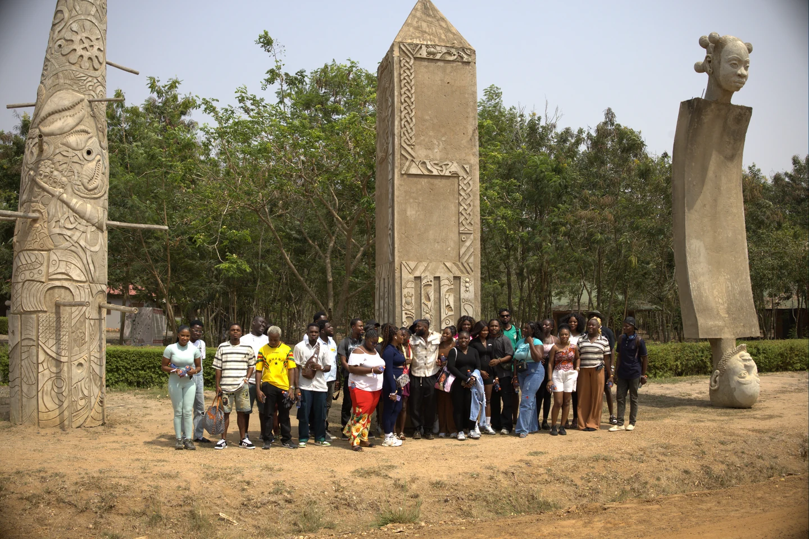
Monument frame
The image that anchors the whole trip.

Adventure-led trips across Ghana and West Africa. Personally scouted. Crew-first. Real terrain.
The routes
Peak views, ridge steps, and the kind of climb that turns a bus full of strangers into one crew.
Steep climb, big payoff, and the route that made new people start asking to join.
Forest entry, cold water payoff, and the route that proved the community was already real.
Tent village, sea air, sunrise water, and the trip people still talk about first.
Sculpture grounds, water movement, portrait frames, and a route with a different kind of quiet.

Since 2023
Zico didn't build a travel company. He built a community. One trip, one group of strangers at a time.
Read the storyTrip catalogue / Ada
The museum frame, the boat crossing, the lagoon edge, the portrait beats, the quiet in between. This is how each trip should live on the site: as a memory file with range.
Ask about Ada
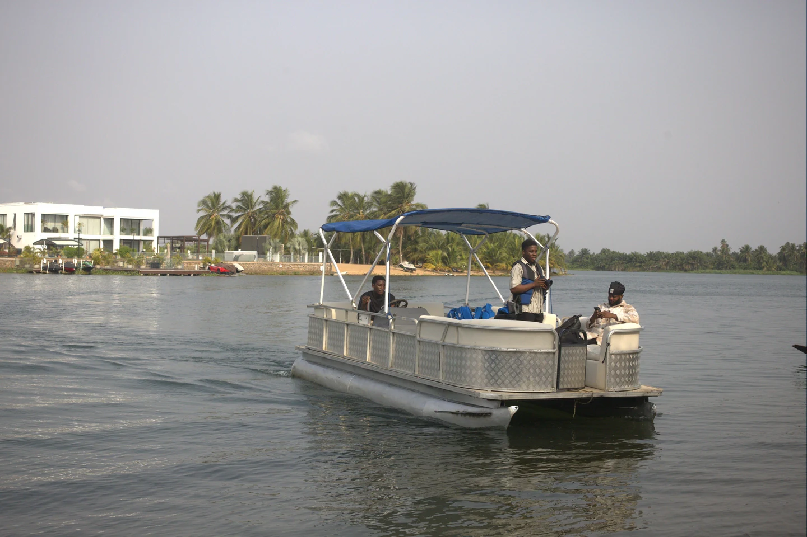
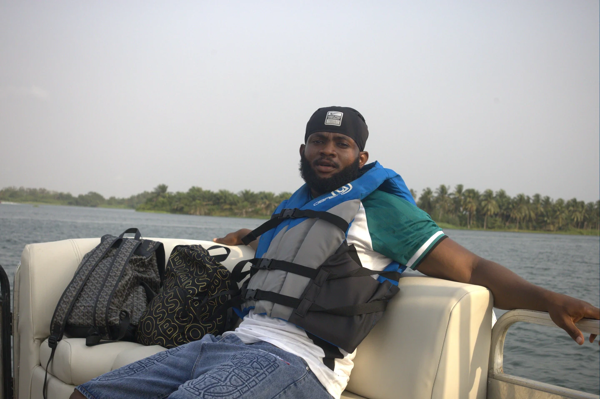
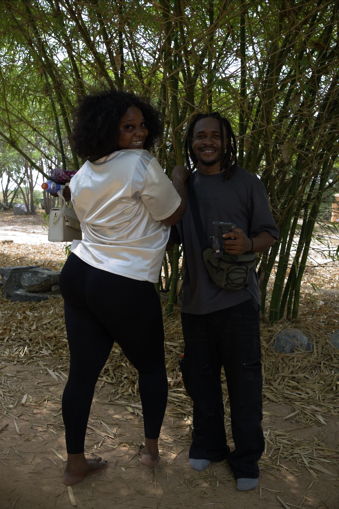
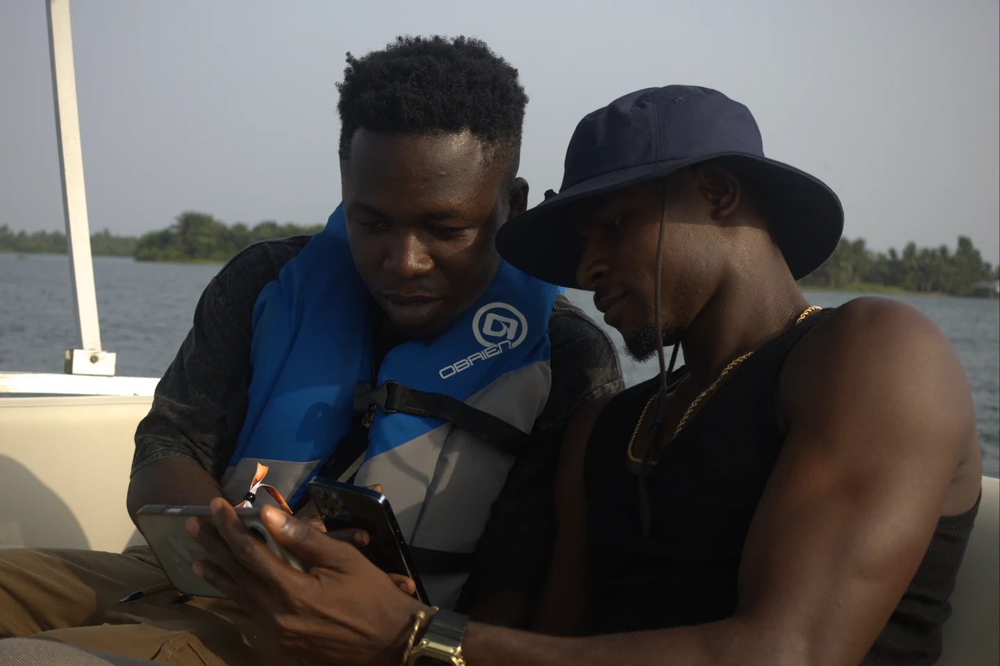
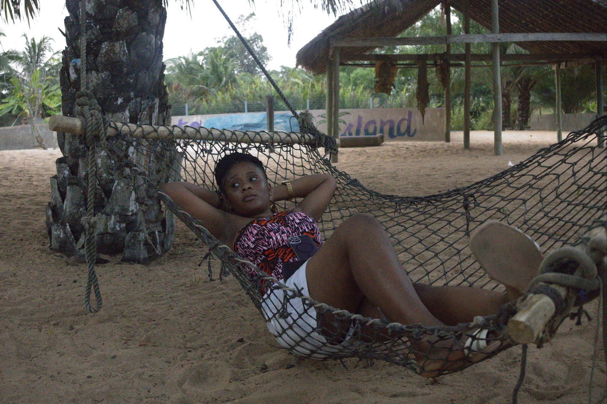
What stays constant
The route is only half of it. The rest is the way the day is held together: the timing, the stop choices, the crew energy, and the feeling that someone competent is quietly carrying the whole thing.
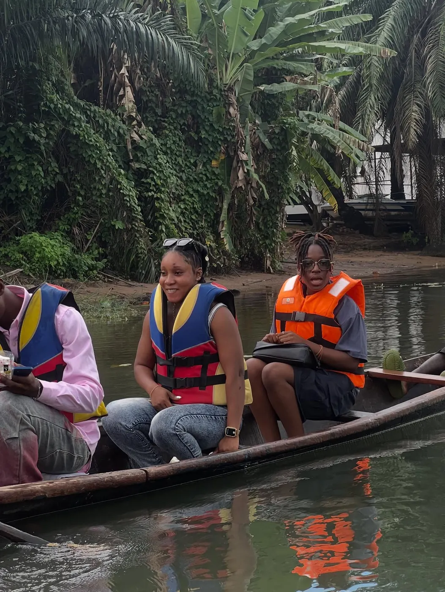
A day on the route
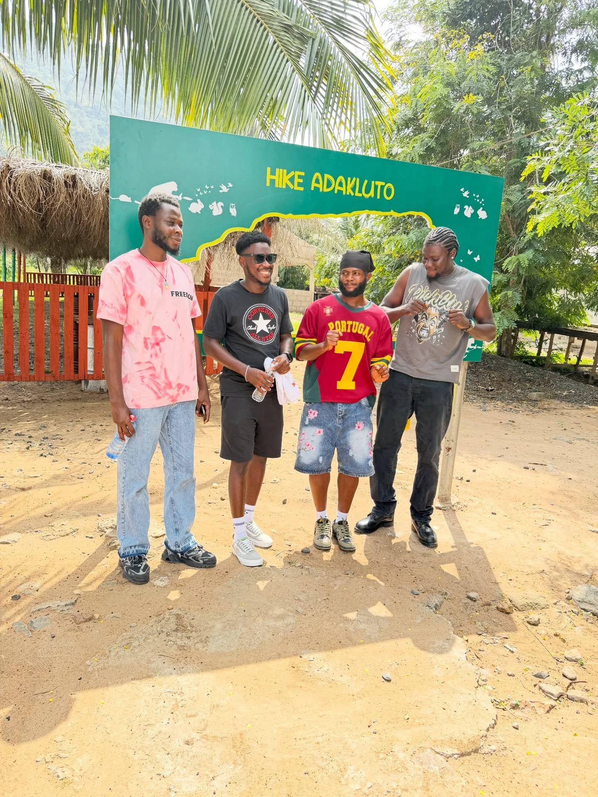
Nobody regretted it either.
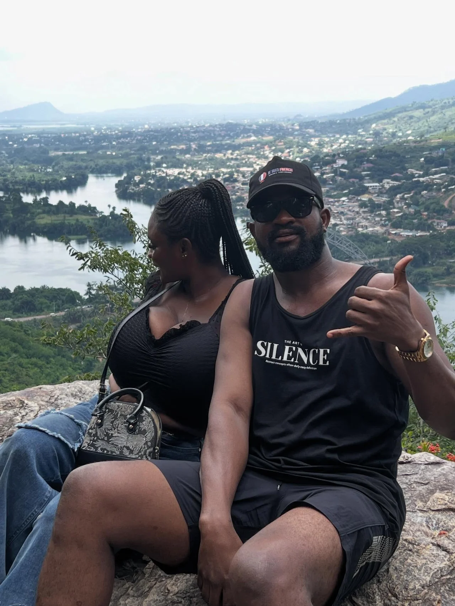
This is why you did the climb.
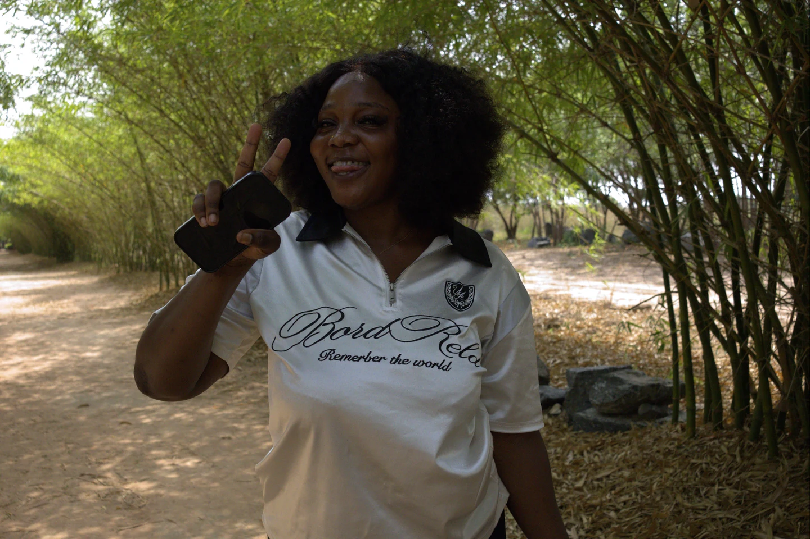
The group chat is still active.
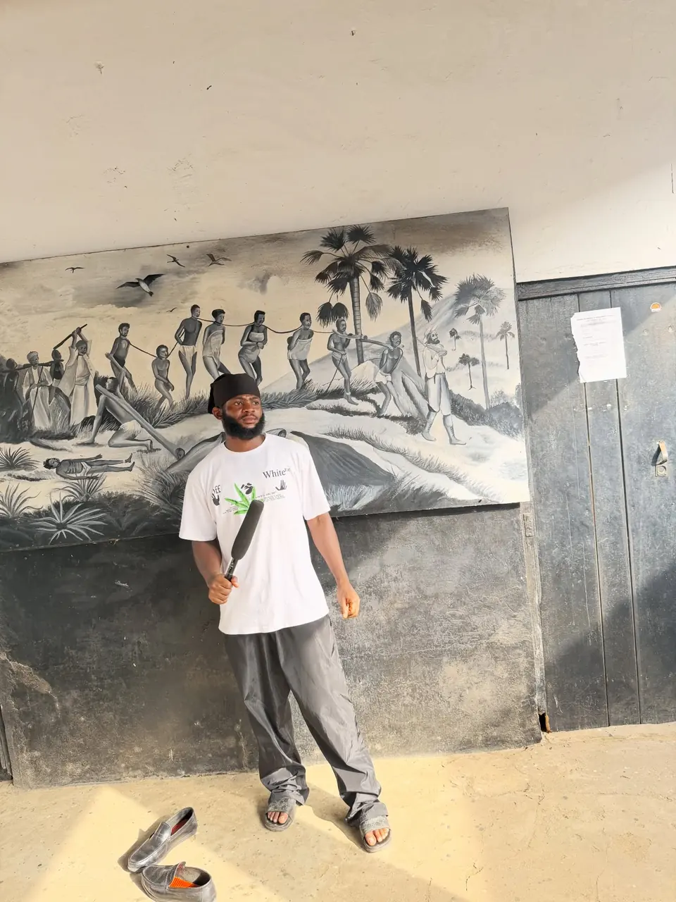
They just want to feel it.
Why people come back
Routes are checked on the ground before they become public. That removes the uncertainty people feel with loosely planned group travel.
The trip is led by people who understand the roads, the pauses, and the timing that makes a place feel right.
You know the route has shape. You do not feel trapped inside a schedule written for tourists.
The best trips leave with photos, jokes, group references, and people who actually keep talking after the bus ride home.
From the archive
This is the part strong travel brands usually fake. Yours does not have to. The archive is already there: coast, crew, culture, and terrain that reads like actual memory.
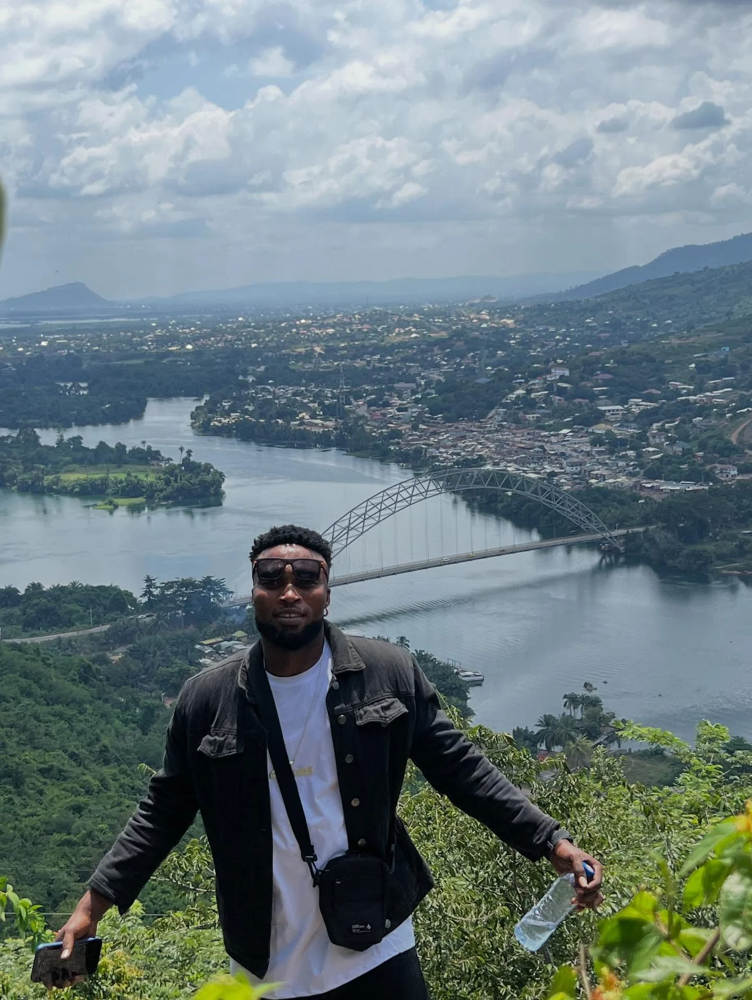
Start with the mood
Keep it simple. Say Hike Adakluto, Keta 3 Days, Asenema Waterfalls, Akwamu Gorge, Ada / Nkyinkyim Museum, or private group. Zico reviews the inquiry and shapes the trip from there.